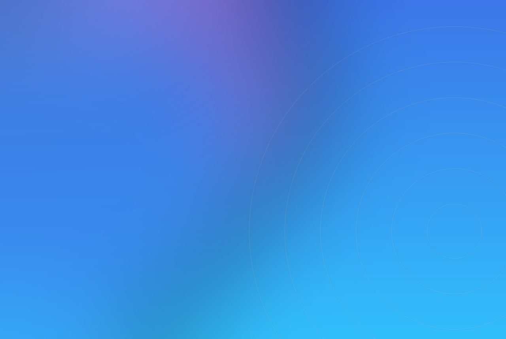

The story is not another headset demo. It is a museum licensing five works into a walkable, multi-user format it never has to house.
ACCIONA Living & Culture, working with Madrid's Museo del Prado, has produced ART MASTERS, a free-roam, multi-user virtual reality experience that turns five of the museum's works into walkable 3D environments, according to designboom. The five are Velazquez's Las Meninas, Bosch's The Garden of Earthly Delights, Veronese's Venus and Adonis, the Rubens and Brueghel collaboration The Sense of Sight, and Goya's Witches' Sabbath. A fictional museum security guard, on his last night before retirement, narrates the tour as each painting opens into a space visitors can enter. The experience opened in Shanghai on 4 July 2026 and in Buenos Aires on 4 September, running there through 4 December; an earlier Time Out New York listing put tickets in the 8 to 30 dollar range.
The real signal is free-roam and the licence, not the headset
Virtual reality in culture has mostly meant a seated visitor, one headset, a swivel chair and a queue behind them. The structural change here is free-roam and multi-user: people walk the space on their own feet, together, untethered. That is the difference between a demo station and an attraction. It changes throughput, because a room cycles groups instead of individuals, and it changes the memory, because the experience is social rather than solitary. The narrative device, a retiring guard, is doing wayfinding work: it gives strangers a shared reason to move through the same sequence.
The second signal is commercial. The Prado is licensing five works into a format that travels to Shanghai and Buenos Aires without shipping a single canvas. The institution monetises its collection as a touring experience it does not have to house, insure or de-install, and it reaches audiences who will never visit Madrid. The painting becomes a location.

What a producer can do now
If a brief lands with a VR idea in it, pressure-test two numbers before the creative: how many people clear the space per hour, and do they experience it alone or together. Free-roam, multi-user hardware costs more and demands a tracked, cleared floor, but it is the only version that behaves like an outing rather than a bottleneck. If the answer is a single seated headset, the activation is a queue with a payoff, and the queue is what the audience will remember.
Why it belongs in an experiential toolkit
A collection, a catalogue or an archive is latent scenography. Rendered as a free-roam space and packaged to travel, it becomes a revenue line that reaches cities the original never will, under the owner's control. The same model fits a fashion house's archive, a sports body's history or a brand's design heritage. The decision that matters is less the render than the rights and the format. For how owned material becomes a travelling brand world, see our branding kit.
SensaLab builds free-roam and multi-user spatial experiences white-label, under an agency or institution's own name, from the real-time build through tracking and on-floor operation. The work we take starts where this one does: a body of owned material, and the question of how to let people walk inside it without shipping the originals.